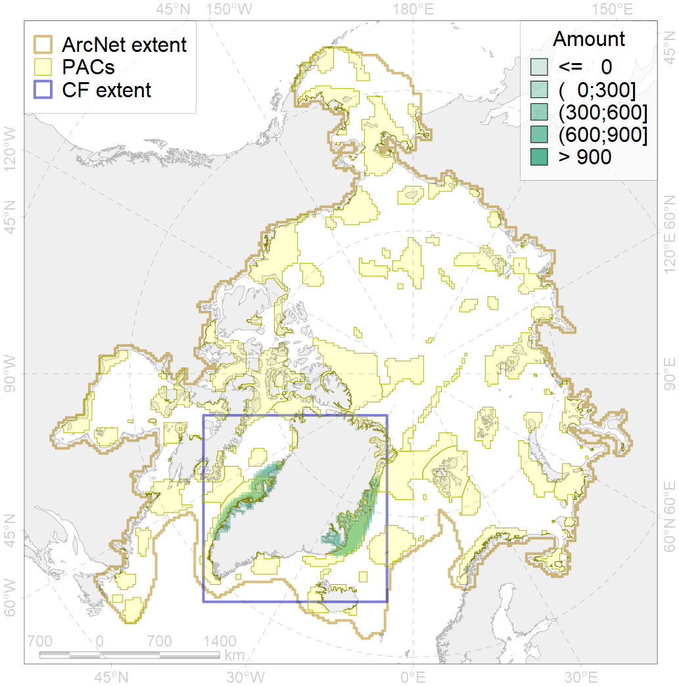
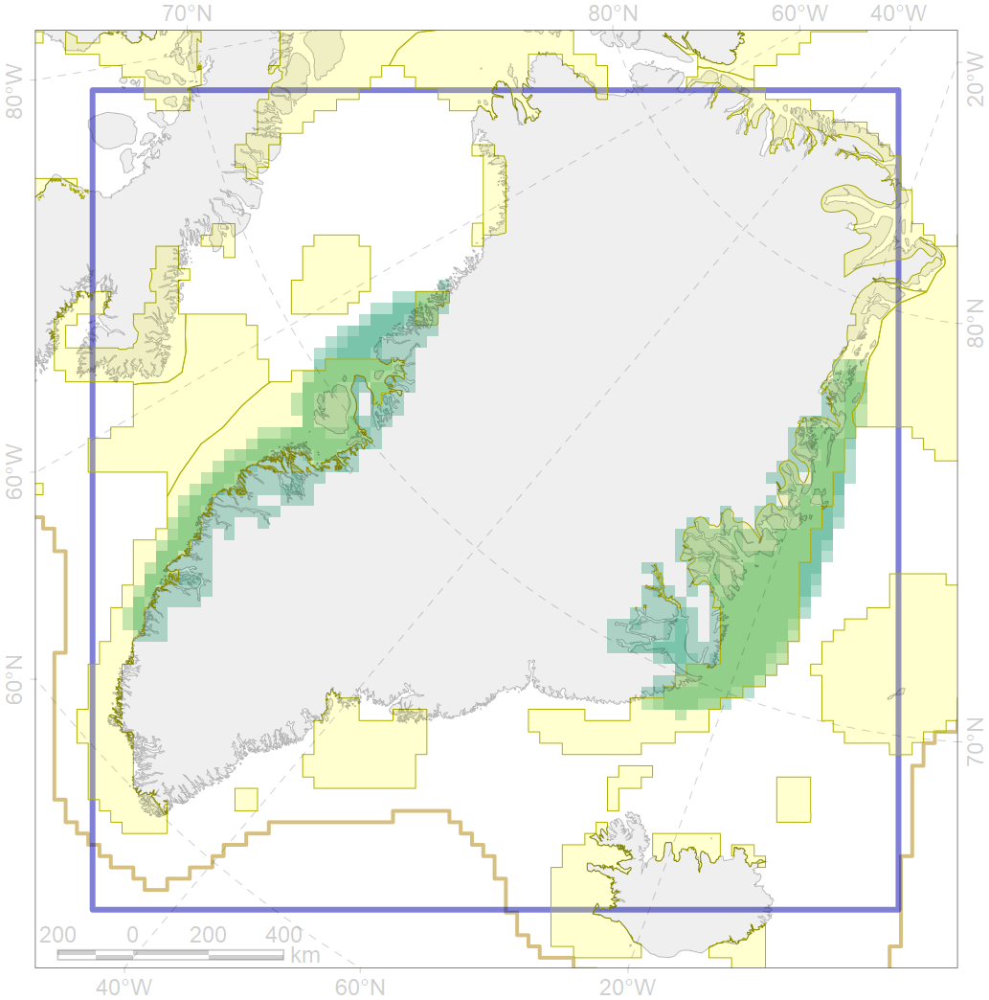

6018

| CF code | 6018 |
| CF name | Long-tailed duck (Clangula hyemalis) Greenland moulting&migration stopovers |
| Time Period | 2008 |
| Source(s) | Boertmann et al 2009, Boertmann & Mosbech 2001 |
| Seasonality | August-September |
| Depth Horizon | >0 m |
| Methodology | Field Data |
| Use Restrictions | Open source |
| Author Name | Gavrilo, Tertitski |
| Notes | |
| Scenario’s Target | 0.768 |
| Target Achievement | 0.771 (Scenario: 100.4%) |
| PAC | Share of the Total Amount within the PAC | Share of the Target Achievement for the ArcNet | PAC’s Contribution to the Target Achievement |
|---|---|---|---|
| 29 | 0.4%1.4% | 0.5%1.8% | 0.5%1.8% |
| 32 | 47.4%48.7% | 59.8%61.5% | 59.5%61.2% |
| 44 | 24.8%28.5% | 30.9%34.5% | 30.8%34.4% |
| 48 | 1.4%1.4% | 1.3%1.3% | 1.3%1.3% |
| inner | 73.9%80.1% | 92.5%99.2% | 92.1%98.8% |
| outer | 26.1%40.0% | 8.0%24.9% | 7.9%24.8% |
| † supplement values are for area consistence whereas principal values are for Accenter compatible gridded stats |